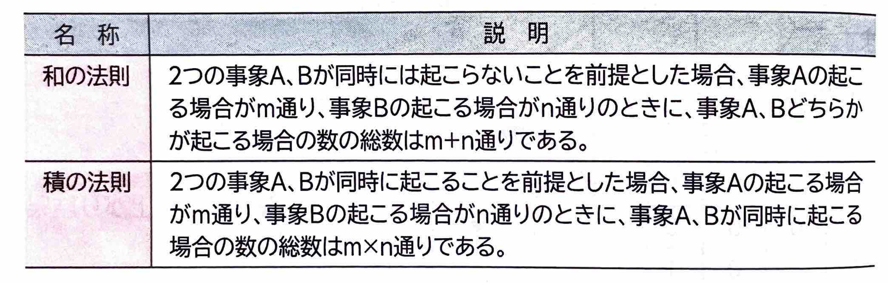
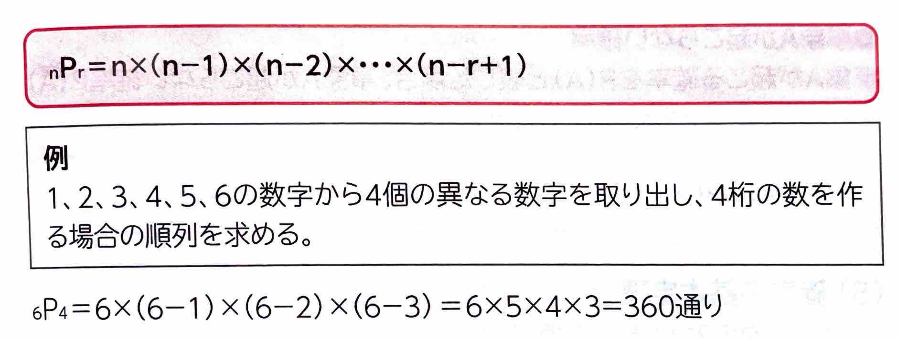
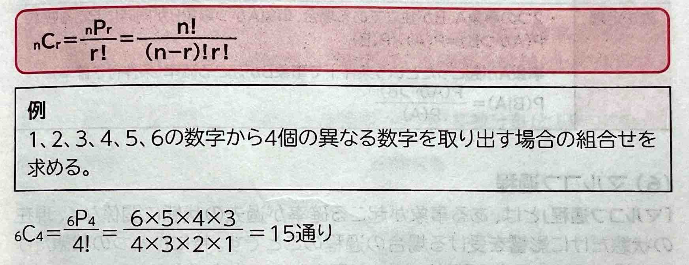
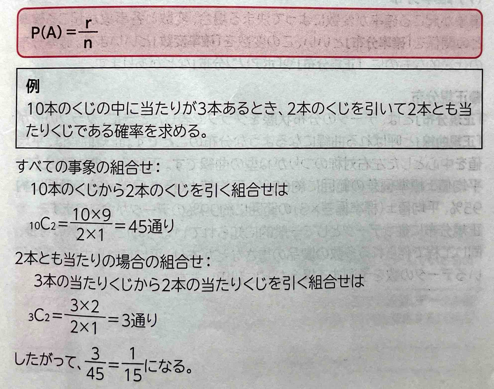
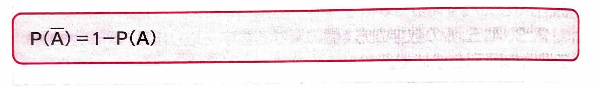
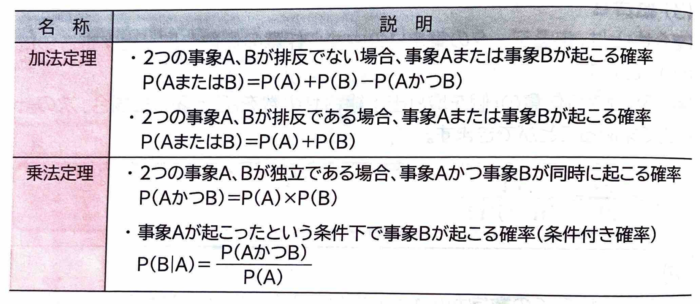
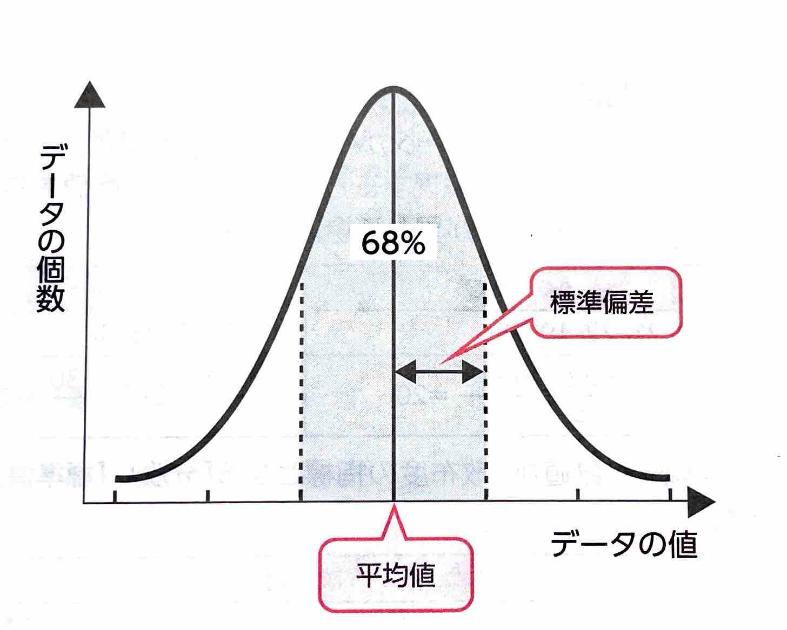
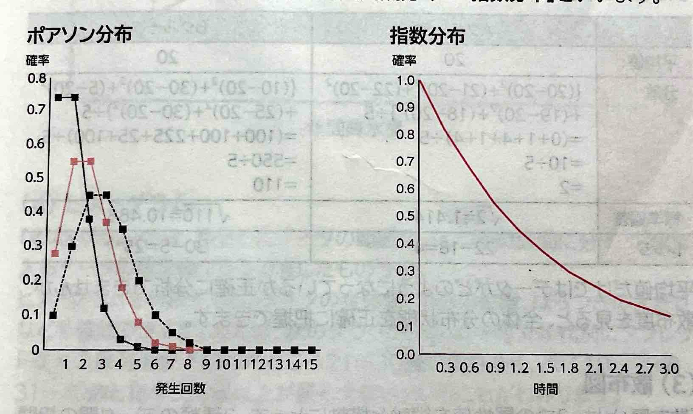

表示
｢応用数学｣
を使います。応用数学とは、数学的な知識をほかの分野に適用することを目的とした数学のことで、｢確率｣
や｢統計｣
などがあります。｢場合の数｣
とは、ある現象(出来事)が起こる可能性の総数のことです。
(2)順列｢順列｣
とは、あるデータの集まりの中から任意の個数を取り出して並べる方法の総数のことです。
(3)組合わせ｢組合わせ｣
とは、あるデータの集まりの中から任意の個数を取り出す手法の総数のことです。
(4)確率｢確率｣
とは、すべての事象の数に対する、ある事象の起こり得る数の割合のことです。
●事象Aが起こらない確率
(5)確率の基本定理
(6)マルコフ過程｢マルコフ過程｣
とは、ある事象が起こる確率が過去の状態に関係なく、現在の状態だけに影響を受ける場合の過程のことです。特にひとつの状態だけに影響を受ける場合を｢単純マルコフ過程｣
といいます。｢確率分布｣
といい、この変数を｢確率変数｣
といいます。確率分布の代表的なものに、｢正規分布｣
や｢ポアソン分布｣
などがあります。｢正規分布｣
とは、データの分布状態をグラフで表したときに、グラフの形が｢正規曲線｣
と呼ばれる曲線になるような分布のことです。正規曲線は、平均値を中心とした左右対称のつりがね型の曲線です。正規分布の特徴として、平均値±標準偏差の範囲に約68%、平均値±(標準偏差×2)の範囲に約95%、平均値±(標準偏差×3)の範囲に約99%のデータが含まれます。
●ポアソン分布と指数分布｢ポアソン分布｣
とは、一定時間内にごくまれに起こる事象の確率分布のことです。事象が起こる回数を横軸に、事象が起こる確率を縦軸としてグラフにします。｢指数分布｣
といいます。